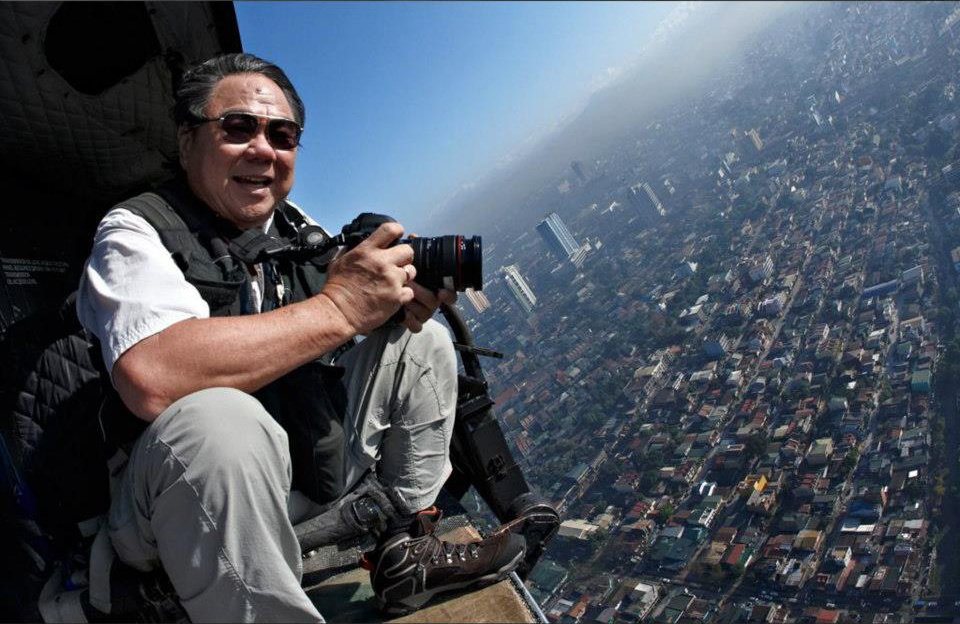
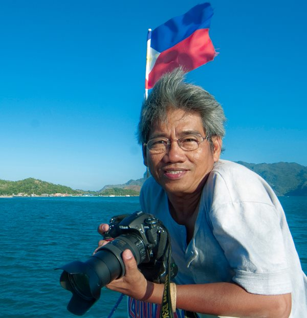

| Home |
Photo gallery |
Our 5 descriptions about phillipine photography
- -A tool for representing Phillipine culture and identity
- - Phillipine photography began in the 1840s
- -The first photography studio was opened in the 1850s
- Felix laureno was one of the first filipino photographer
- -The spaniards were the first ones to introduce photography to the phillipines
The photographers that we picked:
John K. Chua
John Chua is a commercial, architectural, talented, and advertising photographer extraordinaire.
He is the most well-known for his technical excellence in challenging photo shoots to the delight
and delight of clients who sees the impossible

George Tapan
George Tapan was an award-winning travel photographer.
He won two Pacific Asia Tourism Association (PATA)
gold awards and first place in 2011 National Geographic Photo Contest
